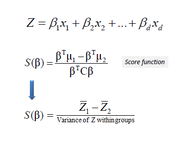

Faster Machine Learning for Programmers and Professionals using Python
Table of Contents
- 1. TODO Day 1: Introduction (LDA)
- 2. TODO Day 2: Using Python & ML Stack(word vectors vs CBOW model)
- 3. TODO Day 3: Linear & Logistic regression (PCA)
- 4. TODO Day 4: Naive Bayes and K nearest neighbours (k means)
- 5. TODO Day 5: Classification & regression trees & SVM(advanced topics)
- 6. DONE Appendix
1 TODO Day 1: Introduction (LDA)
1.1 Introduction to Machine Learning
1.1.1 Learning c
Learning, consists of remembering, adapting and generalising marsland2009. It also includes reasoning and logical deduction.
1.1.2 Machine Learning
Making computers modify their actions so that the actions become more accurate.
1.1.3 Types of Machine Learning
- Supervised:
Learning from examples. Includes regression and classification. Spam detection of emails constitutes an example of a binary classification problem. Predicting stock prices is an example of a regression problem.
- Unsupervised Learning:
Classification by estimating features a.k.a density estimation. Density reduction can also be seen as an unsupervised problem.
- Reinforcement:
Reward based learning
- Evolutionary Learning:
Fitness on the goodness of the solution
1.1.4 Properties of a Good Machine Learning System geron2017
- Features Extraction or Feature engineering
- Occam's Razor: The simplest classifier is more likely to generalise i. e.
- Does not overfit data with high variance
- Unbiased i.e. Doesn't underfit the data
1.2 TODO Python Basics
Having gone through some of the formal Machine learning literature, Let's now turn our attention to the more exciting stuff. One of the major features of the python programming language is the inherent datastructures such as lists that are first class types in the python language. It is this feature, I hypothize, that has possibly made python a forerunner in scientific applications that are data intensive. Let's talk a bit more about python and it's intrinsics types.
1.2.1 DONE Python types and basic syntax
- Getting output using print
print("hello world") print("first value:", 1,"nice one") - Working with variables
# assign 4 to the variable x x = 1 # x is an integer x = 'hello' # now x is a string x = [1, 2, 3] # now x is a list print("x =", x) - In python everything is an object
L = [1, 2, 3] L.append(100) print(L) x = 4.5 print(x.real, "+", x.imag, 'i') x = 4.5 x.is_integer()
- Simple Types
Type Example Description int x = 1 integers (i.e., whole numbers float x = 1.0 floating point numbers (i.e., real numbers complex x = 1+2j Complex numbers (i.e. numbers with real and imaginary parts bool x = True Boolean: true or false values str x = 'abc' String: characters or text NoneType x = None Special object indicating nulls. - Built in Data Structures
Type Name Example Description List [1, 2, 3] Ordered collection tuple (1, 2, 3) Immutable ordered collection dict {'a':1, 'b':2, 'c':3} unordered (key,value) pairs set {1,2,3} Unordered collection of unique values
1.2.2 TODO Operations on Built in types
In this section we take a brief look at some common examples operations on built in data structures. A comprehensive quick reference guide for python can be found here Python Quick Reference
1.2.3 DONE Python Copntrol Structures
It is important to note that Control or block structure in python is demarkated using indentation. Therefore, functions and control statements can be identified by their indentation levels. The code snippen below shows an example of this indentation syntax.
- DONE Example Prime Numbers
The example below outputs prime numbers from 0 to nmax which in the snippet below nmax=30.
L = [] nmax = 30 for n in range(2, nmax): for factor in L: if n % factor == 0: break else: # no break L.append(nIn the above example we can see that there is a nested-for-loop within which is an if statement.
1.3 TODO Linear Algebra Review
1.3.1 DONE Vectors and Matrices
In programming we have the concept of n-dimensional arrays. Arrays are sets of ordered numbers i.e. a collection of numbers in a strict order such that each constituting number element can be accessed given it's unique index. This concept was taken directly from linear algebra where a vector is a 1-dimensional array while an matrix is a 2-dimensional array.
Note that in some programming languages such as python we start counting the index of the elements from zero while in linear algebra the first index count is one.
- DONE Matrix representation
Below is an example of a matrix A $$ A=\begin{bmatrix}234 & 292 \\444 & 422 \\999 & 846 \end{bmatrix} $$ The above matrix referred to as matrix A and it has 3 rows and 2 columns. We normally refer to the rows first then the columns therefore it is a 3 by 2 or 3 x 2 matrix. Notationally this is $ \mathbb{R}3x2 $ where the number or rows and the number of columns are the dimensions of the matrix
Also observe in the matrix A the following elements given by the identified by their indices as follows: $$
\begin{matrix} A_{11} & = & 234 \\ A_{12} & = & 292 \\ A_{32} & = & 846 \end{matrix}$$ \(A_{ij}\) is the "i,j entry" in the \(i^{th}\) row and \(j^{th}\) column.
- DONE Vector representation
A vector is an n x 1 matrix. In the example below \(y_i = i^{th}\) element. $$ y=\begin{bmatrix}460 \\444 \\ 425 \\179 \\ 646 \end{bmatrix} $$ Therefore, $$
\begin{matrix} y_{1} & = & 460 \\ y_{2} & = & 444 \\ y_{3} & = & 425 \\ y_{5} & = & 646 \end{matrix}$$
1.3.2 DONE Linear Algebra Operations
- DONE Transposition
Given an m x n matrix/vector. By transposing or exchanging the rows and columns the resulting matrix becomes a n x m matrix. For example, given $$z=\begin{bmatrix}1&2\\3&4\\5&6\\7&8\end{bmatrix}=\mathbb{R}^{4\times 2}$$ 4 rows by 2 columns matrix The resulting transpose of z becomes: $$z^\top=\begin{bmatrix}1&3&5&7\\2&4&6&8\end{bmatrix}=\mathbb{R}^{2\times 4}$$ 2 rows by 4 columns matrix
- DONE Matrix Addition and Subtraction
- DONE Example
$$
\begin{bmatrix} 1 & 0 \\ 2 & 5 \\ 3 & 1 \end{bmatrix}+ \begin{bmatrix} 4 & 5 \\ 2 & 1.5 \\ 0 & 1 \end{bmatrix}= \begin{bmatrix} 5 & 5 \\ 4 & 6.5 \\ 3 & 2 \end{bmatrix}$$
- DONE Matrix Addition and Subtraction Properties
- Operands must have the same dimension
- Resulting value dimensions must be consistent with operand dimensions
- DONE Example
- DONE Scalar Multiplication
- DONE Scalar Product
- DONE Matrix Vector Product
- Example
$$
\begin{bmatrix} 1 & 3 \\ 4 & 0 \\ 2 & 1 \end{bmatrix}\times \begin{bmatrix} 4 \\ 5 \end{bmatrix}= \begin{bmatrix} 1 \times 4 + 3 \times 5 \\ 4 \times 5 + 0 \times 5 \\ 2 \times 4 + 1 \times 5 \end{bmatrix}= \begin{bmatrix} 4 + 15 \\ 20 + 0 \\ 8 + 5 \end{bmatrix}= \begin{bmatrix} 19 \\ 20 \\ 13 \end{bmatrix}$$
- Scalar product is a special form of a matrix vector product.
- Example
- DONE Matrix Matrix Multiplication
- TODO Example
$$
\begin{bmatrix} 1 & 3 & 2 \\ 4 & 0 & 1 \end{bmatrix}\times \begin{bmatrix} 1 & 3\\ 0 & 1 \\ 5 & 2 \end{matrix}= \begin{bmatrix} 11 & 10 \\ 9 & 14 \end{bmatrix}$$ $$
\begin{bmatrix} 1 \\ 2 \\ 3 \end{bmatrix}×
\begin{bmatrix} 4 \\ 1.5 \\ 1 \end{matrix}=
\begin{bmatrix} 1 × 4 \\+\\ 2 × 1.5 \\+\\ 3 × 1 \end{bmatrix}=4+3+3=10 $$ $$
\begin{bmatrix} 1 \\ 2 \\ 3 \end{bmatrix}×
\begin{bmatrix} 4 \\ 1.5 \\ 1 \end{matrix}=
\begin{bmatrix} 1 × 4 \\+\\ 2 × 1.5 \\+\\ 3 × 1 \end{bmatrix}=4+3+3=10 $$
- DONE Properties
- Associative \((AB)C=A(BC)\)
- Not commutative \(AB\noteq BA\)
- m x n matrix multiplied by n x o matrix results in an m x o matrix.
- TODO Example
- DONE Identity matrix
In mathematics, the identity property is a concept by when a mathematical element is multiplied by an identity element the result is the original multiplying element. In linear algebra when a matrix or vector is multiplied by its corresponding identity matrix i.e. (max dimension of multiplying matrix/vector) will be the the multiplying matrix or vector. The Identity matrix is denoted by \(I=I_{n\times n}\) where n is the maximum dimension of the multiplying matrix of vector. Sybmolically for any Matrix \(A\), \(A\dot I = I \dot A = A\).
- DONE Inverse Matrix
Any matrix factor when multiplied by matrix A resulting in an identity matrix is the inverse of such a matrix following the mathematical definition of an inverse. Therefore symbolically speaking \(A(A^{-1})=A^{-1}A=I\)
- DONE Euclidean Norms
Also known as the \(L_2\) Norm of a vector is the square root dot product of the vector by itself. i.e. Given vector A, it's Euclidean Norm is \(\sqrt{A\dot A}\).
1.4 TODO Session Challenge: Linear Discriminant Analysis
LDA is a method developed by R. A. Fisher to perform classification task based on the statistical properties namely mean and variance of a data set. As simple as this technique may look it performs a relatively decent job when the data is in the right format. So what do we mean by the right format? The LDA criterion makes two assumptions:
- That the dataset is Gaussian, i.e. one that has a uniform mean and standard deviation that tends zero the further away from the mean the values are.
- That each attribute has roughly the same variance on average. In other words there should be very few or eliminated outliers.
Therefore once we have been able to remove outliers, ensure a standard normal distribution of the data having roughly same variance, the linear discriminant function becomes: $$D_k(x)=x\times\frac{\mu_k}{\sigma^2_k}-\frac{\mu_k^2}{2\times\sigma^2_k}+\ln(P(k)) - - - (1)$$ where $$\begin{matrix} D_k(x)&=&\text{Classification of data, x}& \\ k&=&\text{class k}\end{matrix}& \\ \mu_k &=& \frac{1}{n_k}\sum_{i=1}^nx_i & \text{mean of class k}\end{matrix} - - - (2)$$ $$\begin{matrix} \sigma^2 &=& \frac{1}{n-K}\sum_{i=1}^n(x_i-\mu_k)^2 & \text{variance of class k} \end{matrix} - - - (3)$$
Note that for x having more than one feature, the average of the means of each feature will be used and the covariance matrix of the features will also be applied instead of the variance.
One major advantage of LDA is the fact that it still performs reasonably accurately for small amounts of data as well. In addition, it can be used for multinomial classification as opposed to logistic regression which is suited for binary classification.
1.4.1 TODO LDA Lab
1.4.2 DONE Lab Challenge:LDA alternative
There is another presentation of the LDA algorithm found at http://www.saedsayad.com/lda.htm. This is a slightly more convoluted approach than the one previously described. In this method, the coefficients of the linear combination of variables (predictors) that best separates two classes (targets) are first determined. $$\beta=C^{-1}(\mu_k-\Sigma_{i=1}^m\mu_i/m$$ where $$\beta=Coefficients, \mu=\text{average values in class k}$$ $$\begin{aligned}C&=&\text{pooled covariance matrix}\\ &=&(\Sigma n_k)^{-1}(\Sigma n_kC_k)\end{aligned}$$ Next, to capture the notion of separability, the following score function is derived. 
The score function estimates the linear coefficients that maximize the score. Ultimately, the effectiveness of the discrimination is determined the Mahalanobis distance between two groups. A distance greater than 3 means that in two averages differ by more than 3 standard deviations. This means that probability of misclassification is quite small.
Finally, a new point is classified by projecting it onto the maximally separating direction and classifying it as C1 if: $$\beta^\top(x-\Sigma x_k/m)>\log{\frac{p(c_k)}{p(~c_k)}}$$
1.4.3 DONE Lab Exercises:
- Implement a more efficient initial LDA algorithm
- Implement the alternative LDA algorithm and compare your answers. If they are different, explain why this could be. Which algorithm is better based on a. Accuracy b. Ease of implementation c. Computation Resource efficiency (time & space complexity)
1.4.4 Predictors Contribution
A simple linear correlation between the model scores and predictors can be used to test which predictors contribute significantly to the discriminant function. Correlation varies from -1 to 1, with -1 and 1 meaning the highest contribution but in different directions and 0 means no contribution at all.
1.5 TODO References
2 TODO Day 2: Using Python & ML Stack(word vectors vs CBOW model)
2.1 TODO ML Pipeline
2.2 TODO Feature Extraction vs Data Cleaning
Feature extraction and data cleaning could almost be used interchangeably, however, there is a fine difference between the two. While data cleaning is a procedural concept, feature engineering requires skills acquistion by experience and experimentation. In other words, data cleaning operations are mostly bye-products of the feature engineering process. These feature engineering tips will be highlighted as we walk through the data cleaning process.
2.3 TODO Session Challenge Word Vectors vs Bag of Words
In tasks in which words are features, the bag-of-words model can be used to create a feature vector when the number of features (words) is not known in advance, with the assumption that their order is not important. Each word is represented by a one-hot vector - a sparse vector in the size of the vocabulary, with 1 in the entry representing the word and 0 in all other entries. The bag-of-words feature vector is the sum of all one-hot vectors of the words, and therefore has a non-zero value for every word that occurred. In the weighted variation, it is a weighted sum according to frequency or TF-IDF scores.
Continuous bag-of-words (CBOW) is exactly the same, but instead of using sparse vectors to represent words, it uses dense vectors (continuous distributional "embeddings"). See (Mikolov et. al, 2013).
3 TODO Day 3: Linear & Logistic regression (PCA)
4 TODO Day 4: Naive Bayes and K nearest neighbours (k means)
4.1 TODO Introduction
4.2 TODO Naive Bayes Model
4.2.1 TODO Conditional Probability
4.2.2 TODO Bayes Rule
4.2.3 TODO Naive Bayes
4.3 TODO K-Nearest Neigbours
4.3.1 TODO KNN Representation
4.3.2 TODO KNN Distance measures
4.4 Session Challenge: K-means Clustering
5 TODO Day 5: Classification & regression trees & SVM(advanced topics)
6 DONE Appendix
6.1 DONE Appendix I
6.1.1 Frequently Asked Questions
- What is FMLP-Cubed?
Faster Machine Learning for Programmers and Professionals with Python (FMLP3), is an intensive online course that uses a unique method to get programmers and professionals quickly started with Machine Learning using the Python Machine Learning platform. This commercialised version is streamlined and focused on this methodology and because it's just a 5 day intensive not all the topics in machine learning are covered but a working knowledge of python applied to data science is assured. If your interested, PM me and I shall get you set up.
- Mode of Delivery and Assessment
This is the interesting part. Each participant will have his/her own ML project that he will be working on through out the course. Each day will have a 2-3 hour online webinar where programming walkthroughs will be provided. These recipes can be used to implement daily assignments that would need to be ready before the next class. Each session will have elements that can be used in the individual's personal project and the group project. Assessment will be based on satisfactory completion of daily assignments and group projects. A whatsapp group will be used at the group level to discuss assignment and group projects and will be open for discussions 24/7 subject to everyones availability.
At the end of the course, the participants are to have 2 working ML projects along with mini projects completed with assignments. Lecture notes and Materials will be sent over via email or group chat.
- Course Requisites
The course is a commercial version of an advanced python course in machine learning I have been teaching Post Graduate Computer Science students. The course became quite popular some tutors from other departments started joining the course. This course therefore is not for novices. The course assumes you already have a working knowledge of basic programming concepts such as loops, arrays and classes as well as a working knowledge of basic calculus. In addition, as this course is an online course, participants will be required to have a solid internet connection during webinars and fairly good internet for group chats. Also to facilitate online support it is advised to have TeamViewer(R) installed on your computer.
- What does FMLP3 cover?
This introductory datascience course covers python basics and fundamental machine learning algorithms that form the building blocks of Machine Learning techniques used in industry practice.
- Introduction to ML and Linear Algebra (LDA)
- Using Python & ML Stack (word vectors)
- Linear & Logistic regression (PCA)
- Naive Bayes and K nearest neighbours (k means)
- Classification & regression trees & SVM(ensemble & advanced methods introduction)
- FMLP3 Duration
FMLP3 is a Five-day intensive course that can span over 5 weeks or 5 days.
- FMLP3 Cost and Payment
Pay NGN45,000 to: Iyalla John Alamina FBN: 3024252015
- Current session schedule
Start Date Schedule: Monday 27 Nov 2017, 11am - 2pm (NGR time for 5 weeks subject to rescheduling due to availability) Registration end Date: Fri 24 Nov 2017
6.2 DONE Appendix II

6.2.1 Assignment 0: Welcome & System Setup
Hello and welcome to this course Faster Machine Learning for Programmers and Professionals using python. The essence of this taster session is to get you up and running with your machine learning environment. It is this environment that all our work is to get done in. This python/scripting environment is a free cloud environment known as azure notebooks which is Microsoft's Jupyter notebooks cloud computing platform. Before we dive into this platform a little note about python and Jupyter notebooks.
- Ways to Run Python
There are four ways in which to run python on your computer. The four ways are listed below.
- Executing a Python Script
- The Python script Shell
- The interactive python shell
- Jupyter notebooks
The first method is done using the 'python' command to execute a previously edited python script file. This can also be achieved if you are using a python integrated developer environment such as active python or pycharm by JetBrains.
The remaining methods include interactive methods of using python so that results of commands can be seen simultaneously at time of writing just by pressing enter. As we shall see, items 2 to 4 are with increasing order of interactivity and nifty features. So the interactive python shell has more features than the python script shell and the Jupyter notebooks has the most features integrating a web interface IDE along with interactive shell features into one environment. The Jupyter notebooks is fast becoming the defacto standard used by the science and technology community to share computation-intensive knowledge to a wide range of audiences. Jupyter Notebooks is therefore the method we will be adopting to perform machine learning using the azure notebooks cloud platform and the python machine learning stack.
- Steps to setup Azure Notebooks
- On any web browser, log on to notebooks.azure.com using your Microsoft(R) passport or register a new Microsoft account if you don't have one to log on with.
- Create A new Library within your Azure notebooks cloud environment.
- Open the newly created library and upload the 'pythintro.ipynb' file that came with this laboratory assignment.
- Open the 'pythintro.ipynb' ipython notebook file and run the interactive code step-by-step using the 'play' button located on the tool bar at the top within the browser.
6.2.2 A brief History of Jupyter Notebooks
There may be a little bit of confusion with the 'ipynb' file because sometimes we refer to it as an ipython notebook file and at other times we refer to it as a Jupyter notebook file. They are one and the same thing. Initially the kernel for ipython notebooks supported the python interpreter only. However, the developers were able to develop methods of adding other computer languages into the platform hence the change of name from ipython notebooks to jupyter notebooks. Note also that the ipython notebook files is not the same thing as the interactive python (ipython) shell. Ipython notebook files or jupyter notebook files can only be run on the Jupyter notebook environment.
6.2.3 Session Challenge: Setting up Jupyter Notebooks on your system
It is possible to run ipython notebook on your computer without having to use cloud computing. However the process of setting up can be quite involving. Fire up a browser and navigate to www.firstpythonnotebook.org and follow the instructions up to the end of chapter 2 in order to install jupyter notebooks to your local computer or laptop.
We have now come to the end of this laboratory assignment. Hopefully you have been able to create a notebooks.azure.com account and run your first ipython notebook. In the sessions to come we shall be using this environment to create Machine Learning programs to work on big Data. All the assignments shall be performed from this envinronment as well. Stay Tuned!
6.3 TODO Appendix III
6.3.1 Math: Matrix Inverse Methods
- Engineering method
- Co-factor/Determinant Method
Bibliography
- [marsland2009] Marsland, Machine learning: an algorithmic perspective, Chapman & Hall/CRC (2009).
- [geron2017] Géron, Hands-on machine learning with Scikit-Learn and TensorFlow: concepts, tools, and techniques to build intelligent systems, O'Reilly (2017).